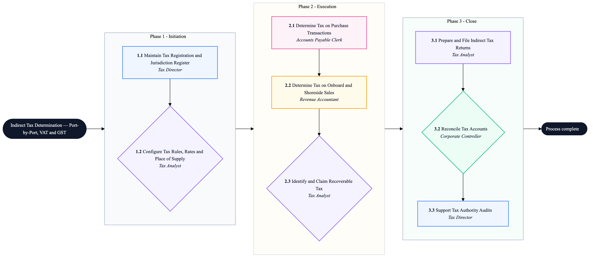

Process Map › Core Financials › Assets, Leases, Cash & Tax
Indirect Tax Determination — Port-by-Port, VAT & GST
Description
Determines and reports indirect tax across the jurisdictions the fleet touches — VAT and GST on shoreside and port purchases, sales tax on onboard transactions in territorial waters, and jurisdiction-specific passenger taxes. The mobile nature of the asset base makes place-of-supply determination genuinely complex.
Fit / gap position
Config Fusion Tax handles determination through configured rules and rates. Complexity is the jurisdiction and place-of-supply matrix, which is tax advisory input. A third-party tax engine should be assessed if the jurisdiction count is high.
In how many jurisdictions is NCLH registered for indirect tax, is a tax engine used today, and how is place of supply determined for onboard sales?
Process flow

L4 process steps 8 steps
| Step | Name | Role | System | Input | Output | KPI | Dec | Exc | Pain point |
|---|---|---|---|---|---|---|---|---|---|
| 1.1 | Maintain Tax Registration and Jurisdiction Register | Tax Director | Fusion Tax | Registrations, itinerary plans | Current jurisdiction register | Register reviewed against deployment quarterly | N | Y | New itineraries can create registration obligations that are identified only after the first sailing |
| 1.2 | Configure Tax Rules, Rates and Place of Supply | Tax Analyst | Fusion Tax | Tax legislation by jurisdiction | Configured tax determination rules | Rules configured for all registered jurisdictions | Y | N | Place of supply for a sale made aboard a moving vessel in territorial waters is genuinely ambiguous in several jurisdictions |
| 2.1 | Determine Tax on Purchase Transactions | Accounts Payable Clerk | Fusion Tax | Supplier invoice | Tax determined and recorded | Determination automated above target rate | N | Y | Port service invoices frequently show tax treatment that conflicts with the configured rules and requires manual override |
| 2.2 | Determine Tax on Onboard and Shoreside Sales | Revenue Accountant | Fusion Tax | Sales transactions with location | Tax determined on sales | Tax correct on all in-scope sales | N | N | SPMS must carry the vessel's location at transaction time for place of supply to be determinable at all |
| 2.3 | Identify and Claim Recoverable Tax | Tax Analyst | Fusion Tax | Purchase tax records | Recovery claims prepared | Recoverable tax claimed within limitation period | Y | Y | VAT on shipyard and drydock costs in EU jurisdictions is substantial and frequently goes unclaimed through simple oversight |
| 3.1 | Prepare and File Indirect Tax Returns | Tax Analyst | Fusion Data Intelligence | Period tax data | Filed returns | All returns filed by deadline | N | Y | Return formats and deadlines differ by jurisdiction and low-volume countries are the ones most often missed |
| 3.2 | Reconcile Tax Accounts | Corporate Controller | Oracle ARCS | Tax balances, filed returns | Reconciled tax accounts | Tax accounts reconciled monthly | Y | N | Timing between accrual, payment and recovery leaves balances that require explanation each period |
| 3.3 | Support Tax Authority Audits | Tax Director | Fusion Tax | Authority information request | Audit response with transaction evidence | Responses within authority deadlines | N | Y | Authorities request transaction-level evidence years later, so retention and retrievability must be designed in from the start |
Systems, measures and risks
- Fusion Tax
- Fusion Payables
- Fusion Receivables
- SPMS
- Tax determined correctly on 100% of in-scope transactions
- Returns filed by statutory deadline
- Recoverable tax claimed within limitation period
- Zero penalties for late or incorrect filing
- Place of supply for onboard sales in territorial waters determined incorrectly
- Recoverable VAT on port and shipyard costs unclaimed and time-barred
- Registration obligations triggered by new itineraries and not identified
- Tax rules changing across many jurisdictions without systematic monitoring